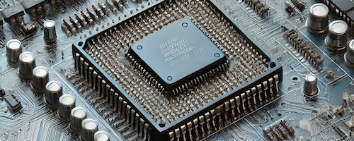

Intel Sustainability Timeline
Discover Intel's journey towards a more sustainable future.
Some highlights:
Intel started its sustainability journey in 2000.

Intel reduced water usage in 2010.
Intel achieved 100% renewable energy in 2020.